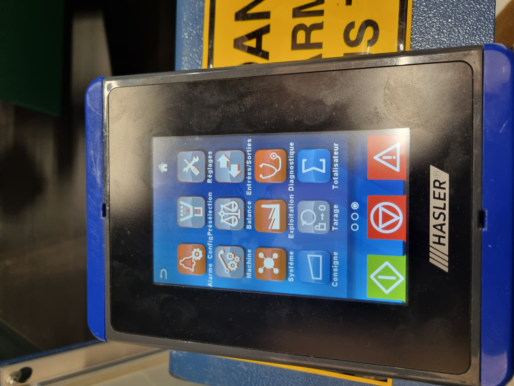
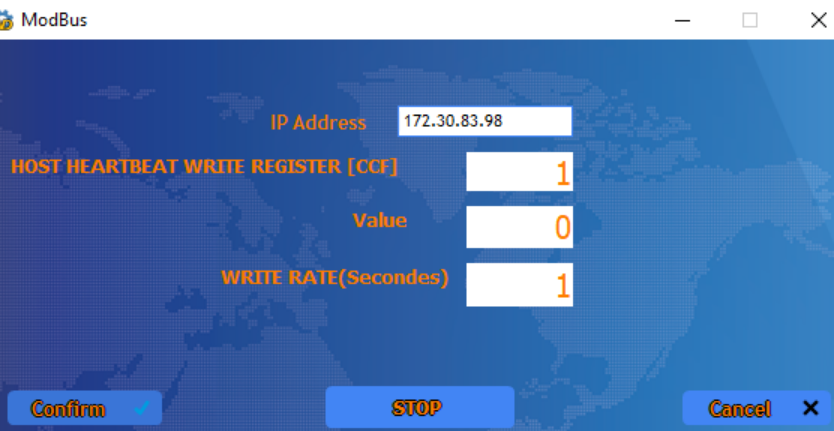
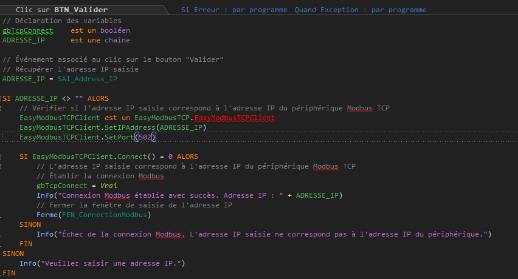
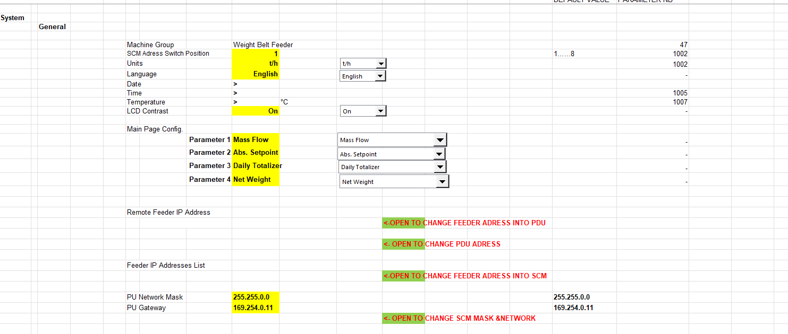
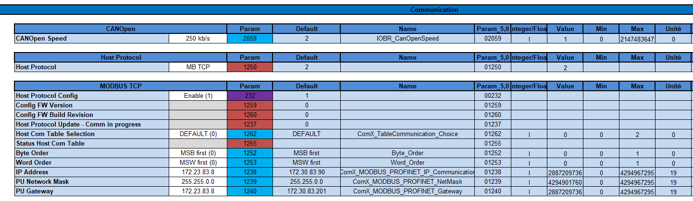
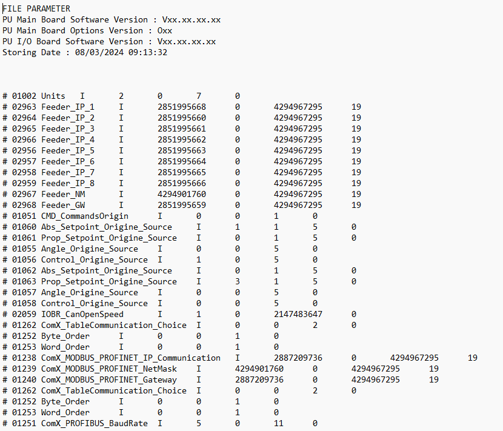

Découverte de WINDEV
Dès mon entretien pour intégrer HASLER en tant que stagiaire, M. MAGNIFATCHAM m’avait expliqué que mon stage serait réalisé sur WINDEV. J’ai donc pris les devants et commencé à effectuer mes recherches sur ce logiciel en amont de mon stage. J’y découvre alors un outil de génie logiciel permettant de gérer de A à Z la création de notre logiciel, de la vue jusqu’à la programmation des actions à réaliser. WINDEV a son propre langage de programmation, le W Langage, celui-ci est enrichi d’une bibliothèque énorme facilitant le développement. Pour me familiariser avec ce logiciel j’ai regardé des vidéos explicatives, proposées par PC SOFT, j’ai aussi analysé le code d’un logiciel programmé par mon maitre de stage. En mettant en parallèle ces 2 méthodes de découvertes j’ai pu assez rapidement me familiariser avec ce nouveau langage.
Sujet
Développement d’un Software et gestion de sa base de données sous Windev
Le but est d’améliorer le projet VisuaLLink qu’un autre stagiaire avait commencé pour pouvoir le rendre plus esthétique et une prise en main plus simple pour les clients. Tout en apportant de nouvelles fonctionnalités.
Missions qui m'ont été données à mon prémier stage
Mises à jour sur le SCM 3▼
Description
La première activité réalisée durant mon stage était d'effectuer des mises à jour sur le SCM 3, à la fois en urgence et en utilisant les dernières mises à jour disponibles.
Le logiciel utilisé était :
- ModScan, logiciel de balayage utilisant le protocole ModbusTCP.
J'ai également exploré toutes les options de la PDU pour me familiariser davantage avec le matériel et le logiciel de l'entreprise.

Formatage carte SD en système de fichiers FAT32▼
Description
Le formatage d'une carte SD en système de fichiers FAT32 est un processus qui consiste à préparer la carte SD pour le stockage et la gestion des données selon les spécifications du système de fichiers FAT32.
Cette opération était nécessaire pour assurer la compatibilité de la carte avec différents appareils, tels que la PDU.
Enfin, j'ai également appris à mettre à jour la PDU. J'ai acquis des connaissances sur les procédures et les étapes nécessaires pour effectuer cette tâche.
Communication protocole Modbus TCP/IP▼
Description
Mon objectif était de faire communiquer Windev avec le SCM3 en utilisant le protocole Modbus TCP/IP.


DÉMARCHE DE LA RÉALISATION :
BILAN DE LA MISSION :
En conclusion, la mission d'amélioration du projet VisuaLLink a progressé de manière satisfaisante, avec des étapes clés accomplies. Il est important de recueillir les retours des utilisateurs et des clients pour continuer à améliorer le projet et répondre à leurs besoins spécifiques.
BILAN PERSONNEL :
La mission d'amélioration du projet VisuaLLink m'a permis d'acquérir de nouvelles compétences et de développer mon expertise dans plusieurs domaines :
Bien que la mission ait été globalement enrichissante, j'ai également rencontré certaines difficultés :
Table de communication SCM3▼
Description
L'objectif de mon projet principal était de centraliser dans une application tous les paramètres utiles d'un SCM3 d'un tableau afin que les ingénieurs n'aient pas à les écrire manuellement et pour éviter les erreurs d'écriture.
Table de Communication fait par l'ingénieurs que le SCM3 peut traiter

Table de Communication dans l'application VisuaLLink

Résumé Stage 1▼
Voici le rapport contenant l’intégralité de ces 2 mois de stage, celui-ci retrace mes impressions ainsi que le résultat de mon travail.
Le sujet de mon stage répondait à un besoin, il fallait créer un logiciel permettant de générer facilement une table d’échange entre le contrôleur SCM3 (Smart Control Module 3) et le logiciel de supervision du client.
À l’issue de mon stage, je considère que la mission qui m’a été confiée est réussie. Le logiciel VisuaLLink en est le résultat, celui-ci est constitué d’une base de données comprenant tous les types d’éléments à ajouter dans une table de communication. Ces éléments sont triés par type de machine et sont accessibles via une interface utilisateur ludique et ergonomique qui permet une adaptation rapide et logique au logiciel.
Ce logiciel permet d’importer des tables par défaut pour les modifier, 80% de l’utilisation de celui-ci passe par cette fonctionnalité. Une fois la table de communication réadaptée au client, il est possible de l’exporter pour en créer un fichier interprétable par le SCM3.
Missions qui m'ont été données à mon deuxième stage
Gérer 2 PDU en simultané▼
Ma première mission, je devais confirmer s'il était possible de gérer plusieurs PDU simultanément grâce à l'émulateur BlueStacks.
Pour ce faire, j'ai dû utiliser un script pour forcer le lancement de 2 PDU simultanément, car par défaut BlueStacks empêche le lancement de 2 émulateurs.
Convertion Tableau Excel à Fichier PSF▼
Description
La mission était de créer des tableaux dans Excel regroupant les paramètres avec leur valeur pour chaque fonctionnalité afin de faciliter la conversion vers un fichier PSF.
La disposition de base des paramètres du System dans une page Excel :
Le tableau avec tous les paramètre ranger :
La fichier PSF après la conversion du fichier Excel :
CONTRAINTES :
Le Temps (4Jour)
Complexité de Excel à cause des formules à rentrer pour chercher les valeurs correspondent dans une autre page
DÉMARCHE DE LA RÉALISATION :
BILAN DE LA MISSION :
En conclusion, la mission d'amélioration du projet VisuaLLink a progressé de manière satisfaisante, avec des étapes clés accomplies. Il est important de recueillir les retours des utilisateurs et des clients pour continuer à améliorer le projet et répondre à leurs besoins spécifiques.
BILAN PERSONNEL :
La mission d'amélioration du projet VisuaLLink m'a permis d'acquérir de nouvelles compétences et de développer mon expertise dans plusieurs domaines :
Bien que la mission ait été globalement enrichissante, j'ai également rencontré certaines difficultés :
Résumé Stage 2▼
J'ai dû vérifier la possibilité de gérer plusieurs PDU simultanément avec BlueStacks. En contournant cette restriction, j'ai lancé deux PDU à l'aide d'un script, puis j'ai organisé les données dans Excel pour les convertir en fichier PSF.
Malgré des contraintes de temps (4 jours) et la complexité des formules Excel, j'ai réussi les étapes suivantes : analyse des besoins, recherche, implémentation, tests, intégration ModBusTCP et documentation.
Le projet VisuaLLink a progressé, soulignant l'importance des retours utilisateurs. Sur le plan personnel, j'ai développé mes compétences en développement logiciel, interface utilisateur, scripts VBS, Excel, communication et travail d'équipe, malgré quelques difficultés de gestion du temps et d'adaptation aux retours.